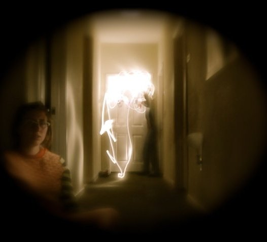
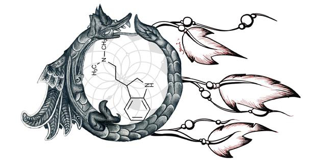
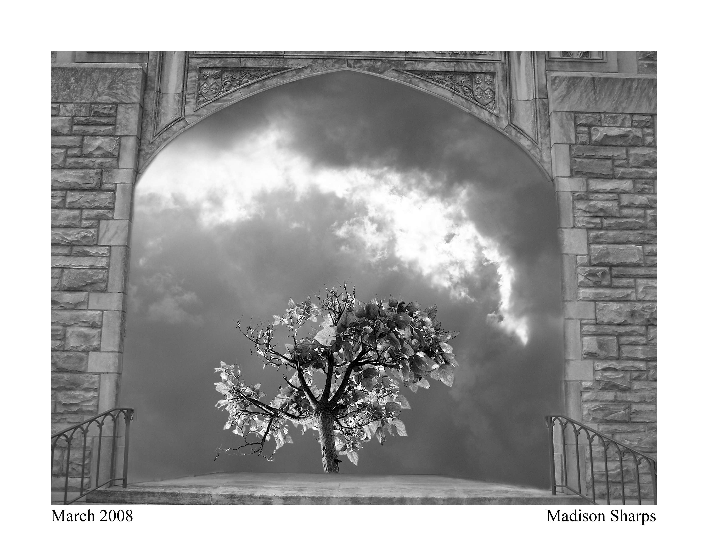

Photography Graphic Design, Surrealism, and Photographic manipulation are my main muses in the photography department, check out some of my past work.  One of the best light photography pictures I captured with a close group of friends.  This is a piece combining my fascination with dreams, the ouroboros, and the chemistry of the brain and dreaming.  One of my first forays in to Photoshop, this was a study/imitation of Jerry Uelsmann.